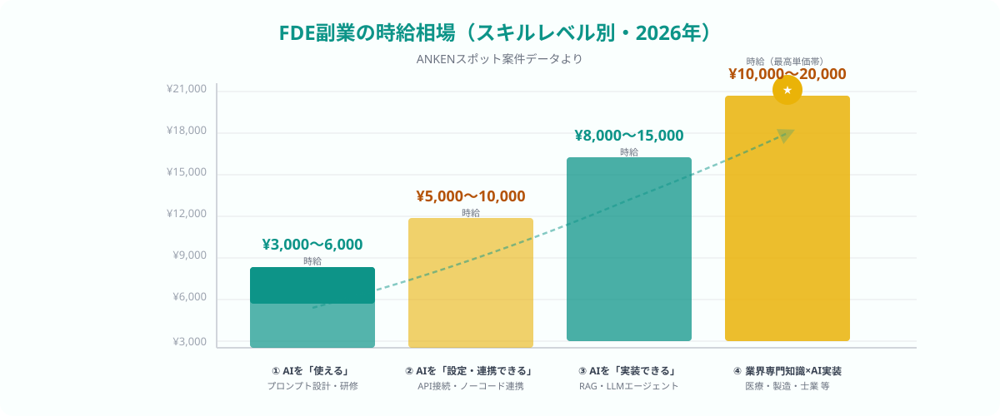
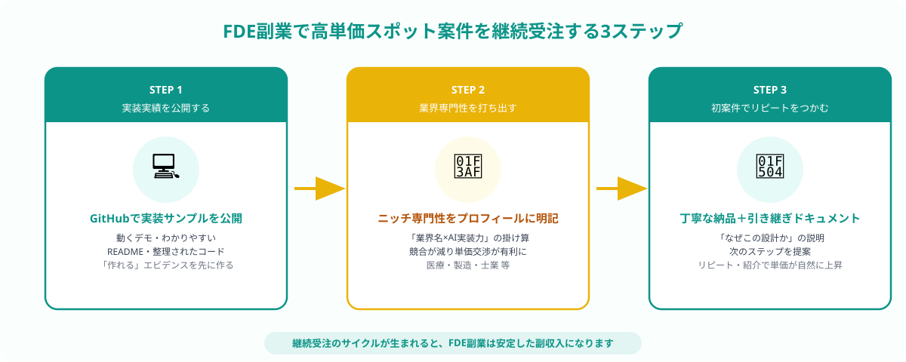

FDE副業の単価相場2026年版（スキル別・役割別）
AIツールの「最後の1マイル」——現場の業務フローに合わせてAIを設定・実装・定着させる役割を担うエンジニア職種。単なるAIツールの使い手にとどまらず、LLM APIの組み込み・RAGシステム構築・社内ツールへのAI機能追加などを実装レベルで担えることが求められる。2026年に企業のAI導入需要が急増したことで、スポット副業市場でも引き合いが急速に増加している。
2026年のANKENでのスポット案件データをもとにしたFDE副業の時給相場は次の通りです。スキルの「深さ」と「専門性の組み合わせ」によって、同じFDE副業でも収入が数倍変わります。

① AIツールを「使える」（プロンプト設計・運用・研修）：時給 3,000〜6,000円
② AIを「設定・連携できる」（API接続・ノーコード/ローコード連携）：時給 5,000〜10,000円
③ AIを「実装できる」（RAG・LLMエージェント・ファインチューニング）：時給 8,000〜15,000円
④ 特定業界専門知識×AI実装（医療・製造・法務・建設等）：時給 10,000〜20,000円
※ スポット案件の規模・緊急性・企業規模によって上下する
注目すべきは、スキルレベル①から③になるだけで時給が最大2.5倍以上になる点です。また、④の「業界専門知識×AI実装」の組み合わせが最も競合が少なく、単価を最大化しやすいことが特徴です。たとえば「製造業の品質管理業務に詳しい×AIを使った画像検査実装ができる」というエンジニアは、製造業のスポット外注市場では希少な存在として高く評価されます。
FDE副業の高単価案件はどこで発生しているか
2026年現在、FDE副業の高単価案件が多く発生している業種・分野には次のような傾向があります。
- 医療・介護・クリニック：電子カルテとAIを連携した業務効率化、音声入力AI、AI-OCRによる書類処理。専門規制が多く「医療現場の業務を理解できるエンジニア」が圧倒的に不足している
- 建設・製造業：図面読み取りAI・AI品質検査・配筋検査自動化・現場音声認識ツール。現場特有の語彙や工程を理解した上での実装が求められる
- 士業（税理士・弁護士・社労士事務所）：契約書AI審査・議事録AI要約・AIを使った書類生成。機密性が高く、社内に依頼できるエンジニアがいないためスポット外注が多い
- 人材・派遣・採用支援：マッチングアルゴリズム開発・AI面接評価・スカウト文AI生成。登録者数の増加に対応するシステム機能追加ニーズが続いている
- 中小EC・小売業：在庫需要予測AI・カスタマー対応チャットボット・商品説明文生成。LLM APIとE-Cシステムを橋渡しできるエンジニアへの需要が高い
共通しているのは「業界の業務フローを理解した上で、AIを現場に定着させる実装ができる」というFDEの本質的な価値が求められている点です。「AIを知っているエンジニア」ではなく「この業界のこの業務にどうAIを組み込むか提案・実装できるエンジニア」が高単価になります。
高単価スポット案件を継続受注する3ステップ
ステップ1｜実装実績をGitHub・ポートフォリオサイトで公開する
FDE副業で最初に壁になるのが「実績がないと受注できず、受注しないと実績が作れない」という問題です。これを解決する最速の方法が、自主制作のサンプル実装を公開することです。
高評価されるポートフォリオの条件
- 「動くデモ」があること：ChatGPT APIを使ったSlackボット、社内文書をベクトル検索するRAGのデモ、音声認識＋要約ツールのサンプル等を実際に動く状態でGitHubまたはVercelで公開する
- 「どんな課題を解いたか」を1行で書くこと：「経費申請書をアップロードするとAI-OCRで自動入力するサンプル」のように、解決した業務課題が一目でわかるタイトル・説明文をREADMEに書く
- 本番を想定したコード品質：ソースコードが整理されており、環境構築手順や設計意図のコメントが書かれていると、発注者がコードを見た際の信頼感が高まる
「FDE」という職種自体がまだ認知途上のため、「RAG構築・LLM API連携・社内ツールへのAI機能追加ができること」をポートフォリオで可視化しておくだけで、同スキルレベルの競合エンジニアと大きく差別化できます。

ステップ2｜特定業界・ツールの専門性を組み合わせてプロフィールに明記する
「AIエンジニアとして何でもできます」よりも、「製造業の品質管理業務×AI画像検査の実装が専門です」の方が、高単価案件のマッチング精度が格段に上がります。特定業界への絞り込みは最初は抵抗感がありますが、実際には競合が減って受注が増えるケースがほとんどです。
業界専門性の組み合わせ例（単価が高い傾向）
- 前職が医療系企業 × LLM APIを使った書類処理の実装経験 → 医療機関のAI導入支援
- 製造業出身エンジニア × AI画像認識・OCRの実装経験 → 製造現場のAI品質検査
- SES/人材業界での業務経験 × マッチングアルゴリズム実装経験 → 人材派遣・採用系AIシステム
- 税理士事務所勤務経験 × RAG・文書AI実装経験 → 士業のAI業務効率化
強みの組み合わせが決まったら、ANKENなどのスポット外注プラットフォームのプロフィールに「対応できる業界・業務ドメイン」として明記します。企業の担当者がキーワード検索でエンジニアを探す際に、業界名・ツール名・業務名が一致すると最初に候補に上がるためです。
①得意な技術スタック（LLM, RAG, API, kintone, n8n 等）
②対応できる業界・業務ドメイン（医療, 製造, 士業, EC 等）
③過去の実装実績（ポートフォリオへのリンクまたは概要説明）
ステップ3｜初案件で成果物の品質と説明責任を徹底しリピート・紹介受注につなげる
FDE副業で最も単価が上がるのは「リピート受注」と「社内紹介受注」のタイミングです。初回案件でリピートにつなげられるかどうかは、成果物の品質だけでなく「発注者が社内で成果物を説明・活用できるようにサポートできたか」で決まります。
初案件でリピートにつながる対応の例
- 引き継ぎドキュメントの作成：「なぜこの設計にしたか」「どのパラメータを変更すると動作が変わるか」「月次コストの目安」を書いたドキュメントを納品物に含める。担当者が社内で説明できるようになり、評価が格段に上がる
- 稼働確認・引き渡しの丁寧なフォロー：納品後1週間は「動作確認で困ったことがあれば連絡ください」と添えておく。小さなフォローが信頼感を大きく高める
- 次のステップを提案する：「現状はこの精度ですが、次のフェーズでこの機能を追加するとさらに効果が出ます」と提案する。担当者にとって「次もこのエンジニアに頼みたい」理由になる
スポット外注市場では、1社から継続して依頼を受けることで実質的なフリーランス報酬に近い安定収入を作れます。FDE副業は「スポット単発でやり切り」ではなく、継続的な改善支援として関係を深めると単価が自然に上がっていく性質があります。
ANKENでFDE副業案件を受注する流れ
ANKENはAI開発・システム開発・AI導入支援のスポット外注に特化したマッチングプラットフォームです。FDE副業のスポット案件も多数掲載されており、週1日・土日・タスク単位での副業受注が可能です。
ANKENでの受注の流れ
- 無料登録（5分）：氏名・連絡先・スキルの概要を登録する。審査は原則当日〜翌営業日以内に完了
- プロフィール入力（15〜30分）：技術スタック・対応できる業界・ポートフォリオへのリンク・稼働可能な時間帯を入力する。詳細なプロフィールほどマッチング精度が上がる
- 案件マッチング・紹介：条件に合う案件が発生した際にANKEN担当者からご連絡。週1〜2件のペースで案件情報が届くエンジニアが多い
- スポット稼働・納品：土日や平日夜間など自分のペースで稼働し、タスク単位で成果物を納品する
- 報酬受取：月次精算で報酬を受け取る。源泉徴収対応もANKENが対応
特にスポット案件は「副業禁止規定のある会社員でも許可を取りやすいタスク単位の業務委託」として依頼が来ることが多いため、本業の勤務先との調整ハードルが低い形態で始められます。まずは月1〜2案件のスモールスタートから始め、実績を積みながら稼働量・単価を上げていくことが現実的なステップです。
よくある質問
- Q. FDE副業は副業未経験でも始められますか？
- A. LLM APIの接続や簡単なRAG構築の経験があれば受注できる案件があります。まずAI研修講師・プロンプト設計支援など補助的な案件から始め、実績を積んで実装案件に移行するステップが始めやすいです。
- Q. 会社員のままFDE副業を始めても、所属企業にばれませんか？
- A. 確定申告時に住民税を「普通徴収（自分で納付）」に設定すれば会社経由の通知を避けられます。ただし副業規定がある場合は事前確認が必要です。副業収入が年20万円超になると確定申告が必要になります。
- Q. FDE副業でよくある失敗は何ですか？
- A. 「何でもできます」と幅広くアピールしすぎて単価が上がらないケースが多いです。得意業界・ツールを絞り込み、実装実績を見せることで単価交渉が有利になります。
まとめ
FDE副業の単価相場は、スキルレベルによって時給3,000〜20,000円と大きな差があります。高単価を狙うために重要な3つのステップは、①実装実績をGitHub・ポートフォリオで可視化する、②特定業界の専門知識とAI実装力の掛け算をプロフィールに明記する、③初案件で丁寧な説明責任を果たしてリピート・紹介受注につなげる、です。
FDE副業の最大の特徴は「スキルの深さ×業界知識の掛け算」で競合が急激に少なくなる点にあります。汎用的なAIスキルではなく、自分のバックグラウンドとAI実装力を組み合わせた「ニッチ専門性」の確立が、2026年の副業市場で高収入を安定させる近道です。まずはANKENに無料登録し、自分のスキルとマッチするスポット案件から始めてみてください。